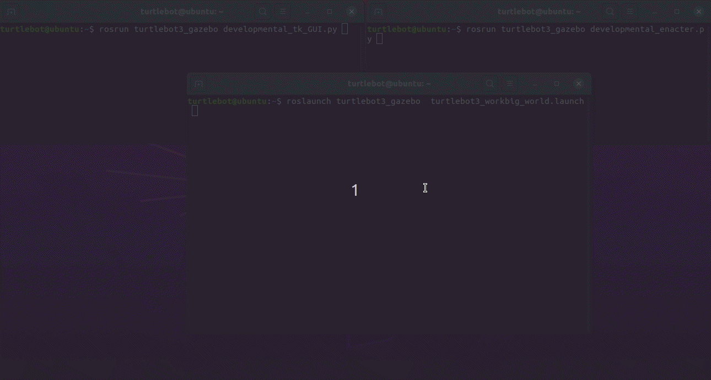

The new progress in CCA and GAIT -- By Jianyong (LIRIS)
Part 1: Autonomous functions learning in ROS2 (Gazebo) with TurtleBot3

Part 2: Environment exploration with caching temporary behavioral patterns